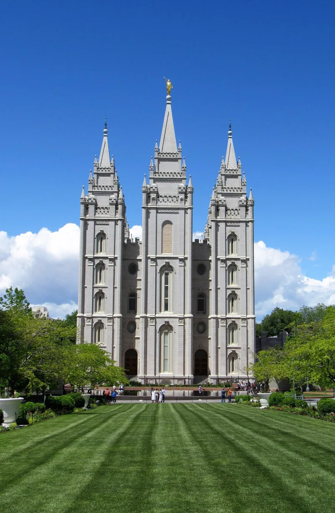

Alma 34: no second chance after death
ContestedLDS scholars have a real answer here. Say so before your friend does.
What the Book of Mormon says
Alma 34:32-35: "this life is the time for men to prepare to meet God," and after it comes "the night of darkness wherein there can be no labor performed." Those who put off repentance are sealed to the devil — "this is the final state of the wicked."
What later teaching added
The spirit world, where the gospel is preached to the dead, and baptism performed by proxy for them by the living.
Their answer, at full strength
That Amulek is addressing the Zoramites — people who had already received the gospel and rejected it. His warning applies to them, not to the billions who never heard.
D&C 138 makes that distinction explicit.
How strong is this argument?
Genuinely arguable. The Zoramite context is real.
But Alma's language is sweeping, and the Bible says the same thing in Hebrews 9:27.
What to say
"Alma says there's no labour after this life. How does that fit with baptism for the dead?"


How they answer this — at its strongest
Alma 34 warns those who had the gospel and threw it away, not those who never heard.
Three replies. Amulek is addressing the Zoramites, people who had the gospel and turned it down. His warning applies to them, not to the billions who never heard. D&C 138:32-34 limits acceptance after death to 'those who died without a knowledge of this gospel'. So the two texts divide humanity with no overlap.
Second, Latter-day Saints teach that character carries over after death. So this is no easy second chance, and Amulek's urgency still stands.
Third, 1 Peter 3:19 and 4:6 have Christ preaching to spirits in prison. 1 Corinthians 15:29 mentions baptism for the dead. So the later doctrine has biblical footing.
The verdict
Their reading of Alma 34 is what the church teaches, but his words are sweeping.
The audience answer is coherent, and it is the church's actual teaching. Critics who ignore it are overclaiming.
It does strain the text. Amulek's words are universal in form. This life is the time for men to prepare. This is the final state of the wicked. The Book of Mormon repeats that scheme elsewhere without the carve-out.
And the whole apparatus of spirit prison, proxy ordinances and three degrees of glory is missing from a book whose next life is simply heaven or hell. As evidence of doctrine growing between 1829 and Nauvoo it holds. As a flat contradiction it can be answered.
Sources
- Richard Packham, 'Major Contradictions in Mormonism'
- Grant Palmer, An Insider's View of Mormon Origins
- CES Letter (aggregates the doctrinal-evolution case)